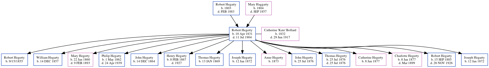

Robert Hegerty 1831 - 1904
[ Home ] | [ Calendar ] | [ Surnames Index ] | [ Family History ]The child of Robert Hegarty and Mary HaggartyRobert Hegerty, the 3 times great-grandfather of Michele Copp (née Phillips), was born in Castledermot, Kildare, Ireland on Apr 10, 18311 and married Catherine 'Kate' Bollard (with whom he had 14 children: Robert, William, Mary Jane, Philip, John, Henry J, Thomas, Joseph, Anne, John, Thomas, Catherine, Charlotte and Robert) in Parish Church of Donoughmore Co.Wicklow on Jun 17, 18543. He also had 1 child, Joseph, whose mother is unknown.
He died on Jul 11, 1904 in Tipperary1,2.
Parents
- Robert was born in 1803
- Mary was born in 1804
Children
- Robert was born on 9/15/1855
- William was born on Dec 14, 1857
- Mary Jane was born on Jan 22, 1860
- Philip was born on May 1, 1862
- John was born on Dec 14, 1864
- Henry J was born on Feb 8, 1867
- Thomas was born on Jan 13, 1869
- Joseph was born on Jan 12, 1872
- Anne was born in 1873
- John was born on Jul 25, 1876
- Thomas was born on Jul 25, 1876
- Catherine was born on Jan 8, 1877
- Charlotte was born on Jan 8, 1877
- Robert was born on Sep 15, 1885
- Joseph was born on Jan 12, 1872
Citations
- Ireland, Civil Registration Deaths Index, 1864-1958 Ancestry.com Operations, Inc.
- Web: Ireland, Calendar of Wills and Administrations, 1858-1920 Ancestry.com Operations, Inc.
- Ireland, Select Marriages, 1619-1898 Ancestry.com Operations, Inc.
Family Tree
Generated by ged2site. Last updated on Jun 16, 2024